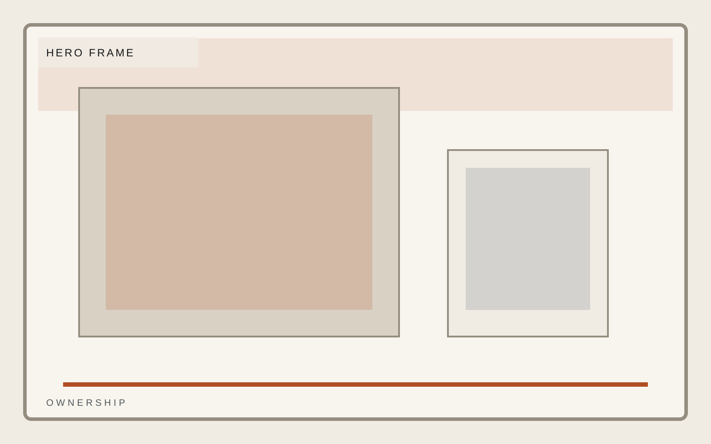
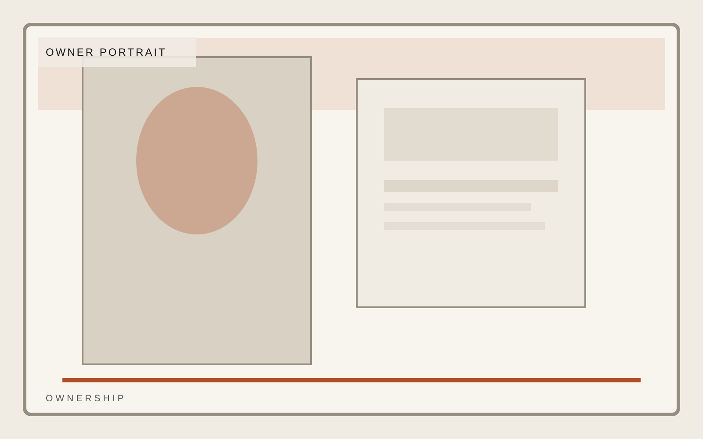
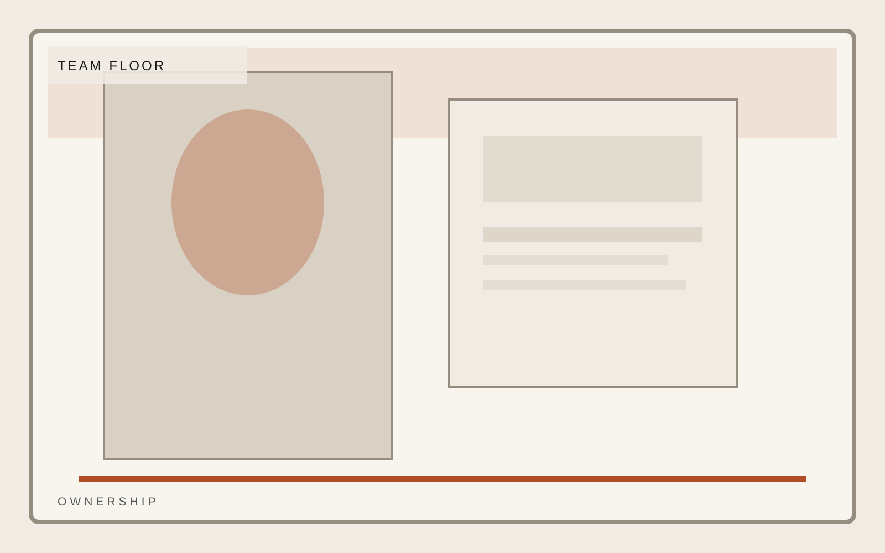

Industrial operations
Leadership and departmental structure with operational accountability.
Field response, equipment support, and facility-grade execution for operators who care more about standards than slogans. Leadership pages should show accountability, not posture alone.
Response
24 hour field escalation
Coverage
Rotating regional teams
Standard
Facility-first quality control

Industrial operations
Owners
Ownership should communicate leadership and accountability together. This page is not about personality first; it is about operating seriousness.
Avery Lane
Managing Partner
Jordan Pike
Operating Principal
Mina Sol
Portfolio Strategy


Industrial operations
Departments
Department structure needs to show how work really moves across the operation, not just who reports to whom.
Response logic
Technical standards
Field accountability
Industrial operations
Culture
Culture here should mean standards under pressure. Keep it grounded and operational.
Response logic
Technical standards
Field accountability